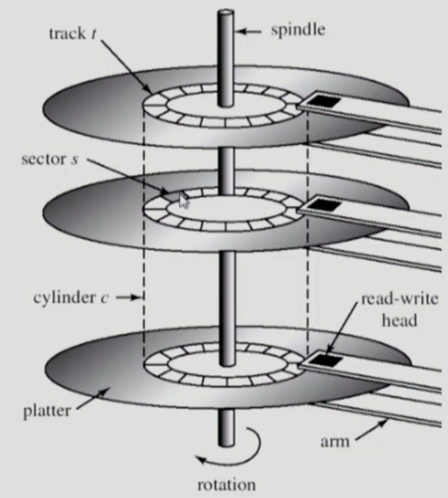
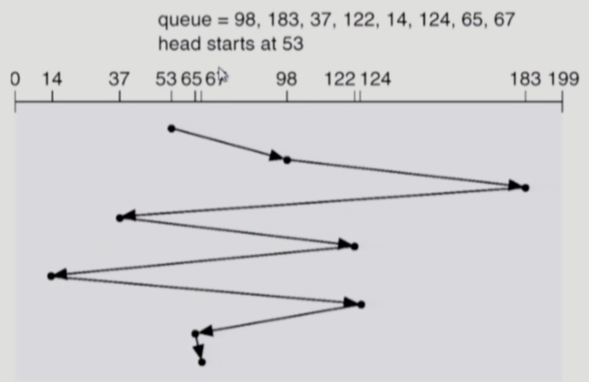
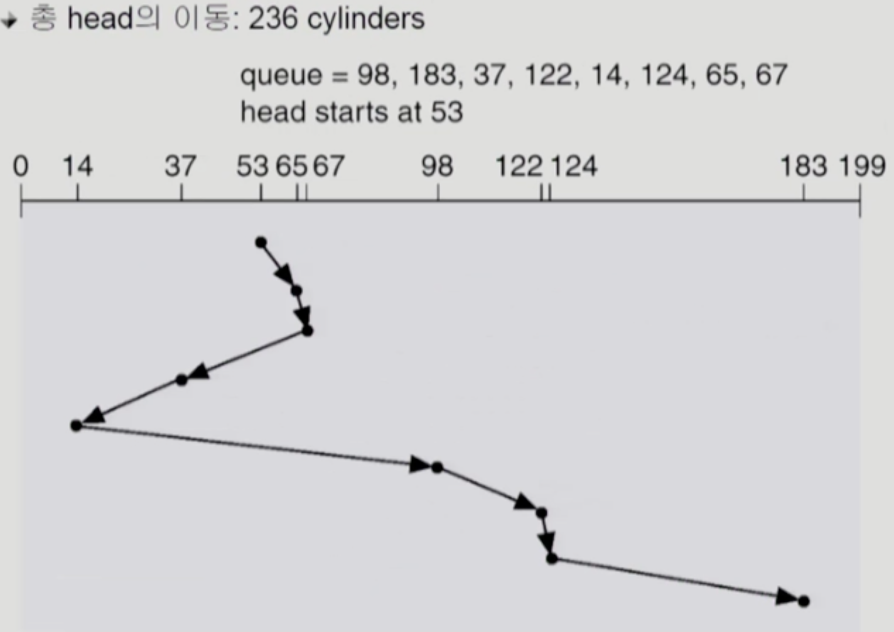
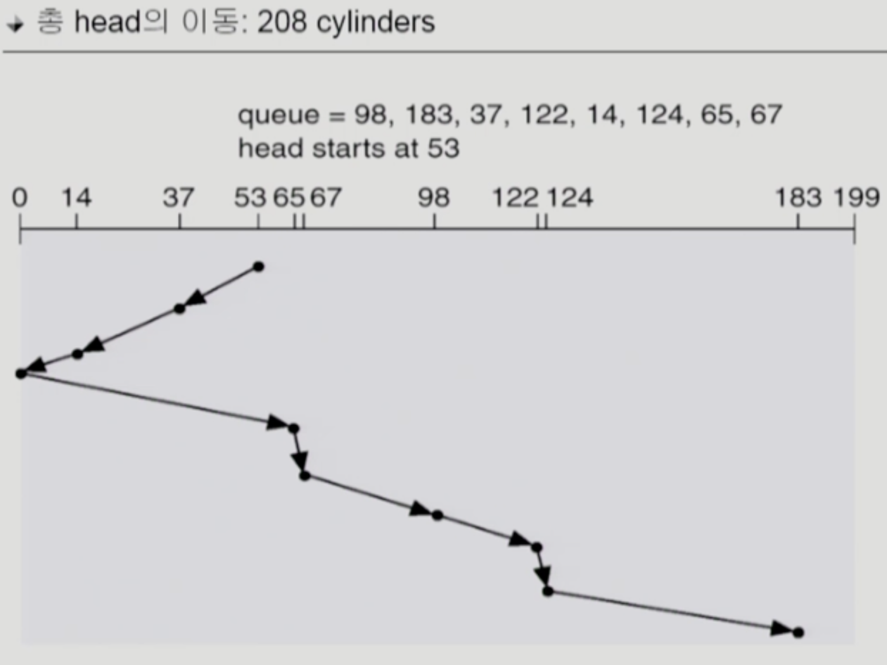
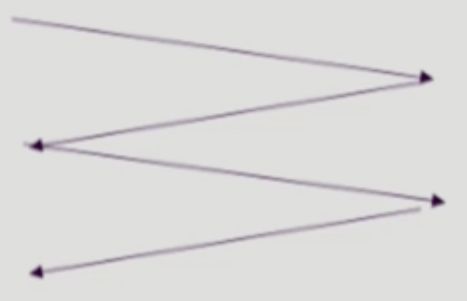
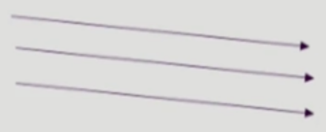
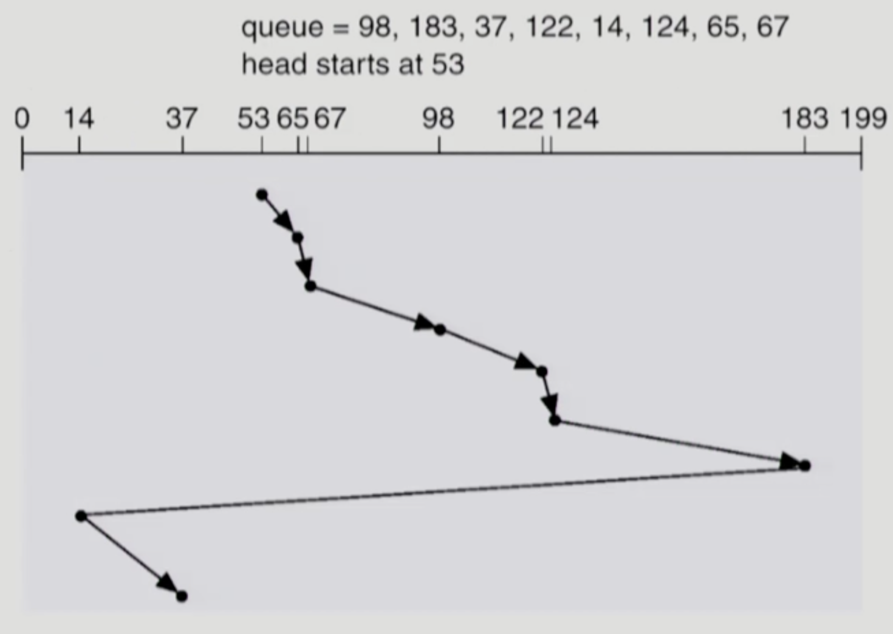
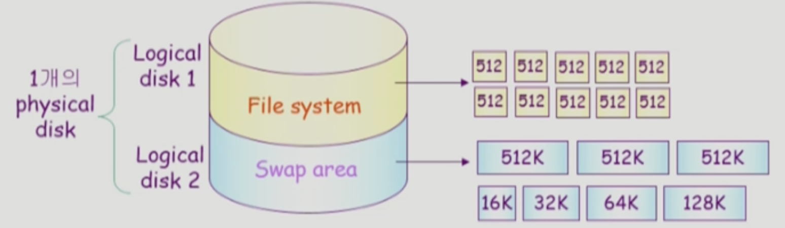
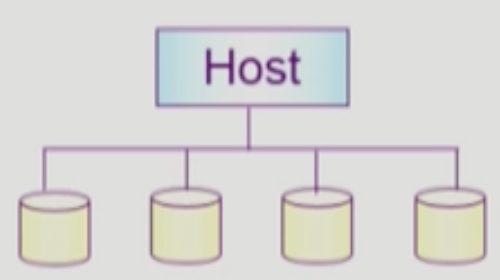

이화여자대학교 컴퓨터공학과 반효경 교수님의 "운영체제 (KOCW)" 강의를 필기한 내용입니다.
다소 잘못된 내용과 구어적 표현 이 포함되어 있을 수 있습니다.
용어정리
Sector, Block
- Sector: 디스크에서 정보가 저장되는 가장 작은 단위
- 하나의 섹터는 Header + Data (512byte) + Trailer 이렇게 세 부분으로 구성되고
- Header 와 Trailer 에 섹터 번호하고 ECC(Error Correcting Code) 가 저장된다
- Header 와 Trailer 에 드가는 정보는 Disk Controller 가 직접 접근하고 운영하는데
- 만약 실제 데이터와 ECC 가 호환되지 않는다면 Bad Sector 로 간주하고 그에 따른 대응을 하게 된다
- Block: 디스크 외부에서 바라봤을 때의 데이터 저장 단위
- 이게 약간 헷갈릴 수도 있는데
- Block 들이 디스크 내의 각 Sector 에 매핑되는 식으로 저장된다고 생각하면 됨
- 그리고 Block 은 1차원 배열의 형태를 띈다 → Sector 의 경우에는 몇번째 원판의 몇번째 섹터 이렇게 2차원 배열로 생각할 수 있다면 Block 은 이런 물리적인 구분 없이 그냥 쭉 이어서 1차원 배열의 형태를 띈다는 것 → 뭔가 아닌거같기도 하고 확실하지 않음
- 위와 같은 차이점때문에 섹터와 블럭의 사이즈는 같지 않을 수도 있는듯
디스크의 구조

- Platter: 디스크를 구성하는 각 원판
- Track: Platter 내에서 같은 반지름을 가지는 Sector 의 집합
- Cylinder 는 원래 여러 Platter 에 걸친 Track 들을 가상의 원통으로 묶은 것을 의미하는데 뭐 Track 이랑 비슷하게 생각해도 된다
- Arm: 디스크를 읽어들이기 위한 막대
- Read-write Head: Arm 에서 실제로 데이터를 읽어들이는 부분
- Spindle: 디스크를 회전시키는 축
Formatting
- Physical Formatting (Low-level Formatting): 디스크에 섹터들을 나누는 과정
- Logical Formatting: FAT 같은 파일 시스템을 디스크에 구성하는 과정
Partitioning, Booting
- Partitioning: 하나의 물리 디스크를 여러개의 논리 디스크로 나누는 과정
- Booting: 컴퓨터를 초기화하는 과정
- 부팅은 다음과 같은 순서대로 일어난다
- ROM 에서 Small Bootstrap Loader 를 실행시킨다
- 메모리는 기본적으로 휘발성이지만 비휘발성의 아주 작은 공간인 ROM 이 존재한다
- CPU 는 메모리에밖에 접근할 수 없기 때문에 ROM 에 있는 부트로더를 실행함
- 이놈은 Small Bootstrap Loader 라고 불리는데 이건 부팅을 시작하기 위한 기본적인 코드인 디스크에서 부트로더 전체를 메모리에 올리도록 하는 코드가 들어있다
- Sector 0 에서 Full Bootstrap Loader 를 가져와서 실행
- 위에서 SBL 이 부트로더 전체를 메모리에 올리는 역할을 한다고 했자네
- 이때의 부트로더를 Full Bootstrap Loader 라고 하고 이것은 Sector 0에 저장되어 있다
- Sector 0은 디스크에서 가장 최외각 트랙의 첫번째 섹터로 무적권 FBL 가 저장되도록 예약되어 있다
- ROM 에서 Small Bootstrap Loader 를 실행시킨다
- 부팅은 다음과 같은 순서대로 일어난다
Disk Access Time
- 디스크에서 데이터를 읽어오는 과정은 아래와 같이 세 부분으로 나눌 수 있다
- Seek Time: 디스크의 암(헤드)을 데이터가 위치한 실린더로 움직이는데 걸리는 시간
- Rotational Latency: 암이 제대로 위치한 뒤에 디스크가 회전해 원하는 섹터가 헤더 위로 회전해오는데 걸리는 시간
- Transfer Time: 실제 데이터의 전송 시간
- Disk Bandwidth: 단위 시간동안 전송된 바이트의 수
- 디스크에서 데이터를 읽어올 때 가장 오래 걸리는 것은 Seek Time 이고 Disk Bandwidth 를 극대화 하기 위해 섹터를 읽는 순서를 최적화하는 작업을 Disk Scheduling 이라고 한다
Disk Scheduling
- Disk Bandwidth 를 최대화 하기 위해서는 Seek Time 을 최소화 해야 한다고 했으므로 요청된 섹터들의 트랙 (실린더)를 기준으로 어떤 섹터를 먼저 읽을 지 결정한다
FCFS (First Come First Service)

- 딱히 뭐 설명할 것도 없다
- 그냥 무지성 선입선출
- 당연히 비효율적이어서 안쓴다
SSTF (Shortest Seek Time First)

- 이건 현재 헤드의 위치를 기준으로 가장 가까운 놈부터 처리하는 방식인데
- 예상하듯이 Starvation 문제가 발생한다 → 한곳에 요청이 몰리면 그와는 멀리 있는 요청은 계속 순위가 밀리기 때문
SCAN (+ C-SCAN, N-SCAN)

- SCAN 은 기본적으로 다음과 같이 작동한다
- 헤드가 디스크의 끝(최외각 혹은 최내각) 트랙으로 움직인다
- 헤드가 반대쪽 끝으로 움직이면서 경로 상에 있는 요청들을 처리한다
- 2번 과정을 반복한다
- 따라서 가장 기본이 되는 SCAN 은 아래 그림 한장으로 설명된다

- 보면 약간 엘리베이터와 비슷하기 때문에 엘리베이터 스케줄링이라고도 부른다
- 이 방식은 Seek Distance 로 최적화 할 수 있고 Starvation 도 안생기는 장점이 있지만
- 트랙의 위치에 따라 대기시간이 고르지 않다는 문제가 있다
- 헤드가 한번 끝에서 끝까지 움직이는데 10초의 시간이 걸린다 하면
- 가운데 트랙의 경우에는 가장 오래 걸려도 헤드가 절반을 움직이고 또 절반을 되돌아오면 되기 때문에 10초가 걸리지만
- 외곽에 있는 트랙의 경우에는 헤드가 한번 쭉 움직이고 또 반대방향으로 쭉 되돌아와야 하기 때문에 최대 20초가 걸릴 수 있다
- 위와 같은 문제를 해결하기 위한 SCAN 의 변형이 C-SCAN 이다
- 헤드가 디스크의 끝(최외각 혹은 최내각) 트랙으로 움직인다
- 헤드가 반대쪽 끝으로 움직이면서 경로 상에 있는 요청들을 처리한다
- 위 과정을 반복한다
- 보면 그냥 SCAN 과의 차이점은 3번 과정인데 그냥 SCAN 의 경우에는 양방향에 대해 경로상의 요청을 처리하지만
- C-SCAN 의 경우에는 단방향에 대해 요청을 처리한다 → 즉, 한쪽 방향으로 움직일 때만 요청을 처리하고 반대방향으로 되돌아 갈 때는 요청을 처리하지 않고 그냥 움직인다는 것
- 따라서 아래의 그림으로 한장 정리가 가능하다

- 따라서 이 방법을 사용하면 기존의 SCAN 방식에 있던 대기시간 불균형을 해소할 수 있다
- SCAN 방식의 변형 중에는 N-SCAN 이라는 놈도 있는데
- 얘는 SCAN 과 유사하지만 이동중에 들어온 요청에 대해서는 경로상에 있어도 처리하지 않는다는 차이점이 있다
- 즉, 한 방향으로 이동하기 전에 들어온 요청에 대해서만 이동하면서 처리하고 이동하는 중간에 들어온 요청은 지금 처리하지 않고 다시 반대방향으로 되돌아갈 때 처리한다는 입장임
LOOK (+ C-LOOK)

- 위그림은 C-LOOK 이다
- SCAN 과 LOOK 의 차이점은 헤드가 어디까지 움직이냐에 달려 있다
- SCAN 의 경우에는 무조건 최외각-최내각에서 방향 전환을 하는 반면
- LOOK 의 경우에는 해당 방향에 더 이상 요청이 없으면 방향 전환을 한다
- 즉, 트랙이 199까지 있을 때 요청된 트랙의 가장 큰 값이 180이면 SCAN 은 (오름차순일 때) 180 을 들르고 199를 간 다음에 내려가는 반면 LOOK 의 경우에는 180 을 들른 다음에 바로 내려간다
- SCAN 과 C-SCAN 의 차이와 동일하게 LOOK 과 C-LOOK 은 양방향이냐 단방향이냐의 차이밖에 없다
Disk Scheduling Algorithm 의 특징
- 일단 보통 SCAN 이나 LOOK 계열의 스케줄링 방식을 사용하고
- 그리고 필요한 경우 쉽게 교체될 수 있도록 OS 와 별도의 모듈로 내장된다고 한다
- 실제 Disk Bandwidth 는 이러한 알고리즘적 측면 외에도 파일을 어떤 방식으로 저장할지도 큰 영향을 끼친다고 한다 (연속 할당? 분할 할당?)
Swap Area Management
- 일단 디스크를 사용하는 이유를 보면
- 메모리의 경우에는 휘발성이기 때문에 비휘발성의 데이터 저장 장치가 필요했고
- 메모리보다 저렴하되 메모리의 역할을 보조해줄 수 있는 저장장치가 필요하기 때문이다
- 위 이유 중 두번째를 위한 것이 앞에서도 계속 나온 Swap Area 인데 어떻게 관리되는지 대강 알아보면

- 뭐 요즘 우분투는 그냥 파티션 안쓰고 파일시스템으로 스왑영역을 관리하지만 디스크를 파티션해서 Swap Area 를 지정해 주는 것이 많이 쓰였다고 하더라
- 일반적인 파일 시스템과 Swap Area 의 차이점은
- 일단 파일보다 훨씬 더 빈번하게 참조되고
- 메모리를 대체하는 공간이기 때문에 데이터들이 임시적이다 → 잠깐 머물렀다가 프로세스가 종료되면 사라지기 때문
- 따라서 공간 효율성보다는 속도 효율성이 훨씬 중요하고 일반적으로 데이터를 나눠 저장하는 것이 아닌 한 덩어리로 저장 (Sequential Allocation) 하게 되고 블럭의 크기도 512바이트가 아닌 512Kb 등의 훨씬 큰 사이즈를 갖게 된다
- 일반적인 파일 시스템과 Swap Area 의 차이점은
RAID

- RAID (Redundant Array of Independant Disks): 는 디스크 여러개를 묶어서 고가용성과 속도 등의 이점을 얻고자 하는 방법이다
- Interleaving, Striping (분산 저장): 여러개의 디스크에서 데이터를 부분적으로 병렬적으로 읽어옴으로써 속도를 향상시키는 방법
- Mirroring, Shadowing (중복 저장): 여러개의 디스크에 데이터를 중복해서 저장해서 Disk Failure 등의 문제 상황을 방지하는 방법
- 단순히 중복해서 저장하는 것만이 아니고 Parity (에러 탐지 코드) 도 추가적으로 구성하기도 한다